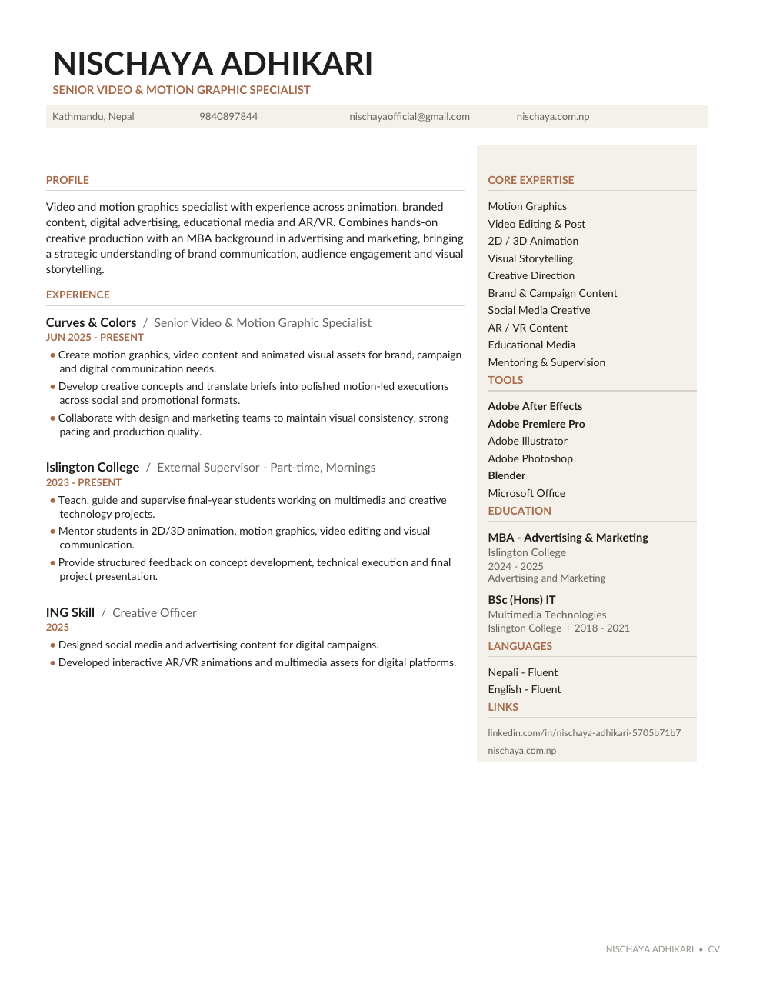

NISCHAYA ADHIKARI — AN INDEPENDENT CREATIVE PRACTICE
Motion with
meaning.
Multimedia Specialist
& Creative Strategist
Ideas shaped by strategy.
Stories brought to life through motion.
NISCHAYA ADHIKARI — AN INDEPENDENT CREATIVE PRACTICE
Multimedia Specialist
& Creative Strategist
Ideas shaped by strategy.
Stories brought to life through motion.
01 — FORM
Finding beauty in the balance
between precision and possibility.
02 — PERSPECTIVE
A little curiosity.
A whole new dimension.
03 — MOTION
Rhythm, pacing, and purpose.
Design that comes alive.
04 — THE GALLERY
Brand films. Animated worlds.
Ideas that invite you in.
05 — SELECTED WORK
Explore the stories beyond the studio.
Enter the gallery ↗THE PORTFOLIO
01 / 04Moving images. Interactive ideas. Lasting impressions.
DESIGN IN ANOTHER DIMENSION
A live study of form, light, and motion.
Keep scrolling. Change your perspective.
THE PERSON BEHIND THE PIXELS
02 / 04I work at the intersection of motion, design, and communication.
From brand content and animation to educational media and AR/VR, I turn ideas into visual stories with rhythm, clarity, and purpose. My MBA in Advertising & Marketing brings a strategic perspective to hands-on creative production.
Alongside my studio work, I mentor final-year multimedia students at Islington College, helping emerging creatives bring their ideas to life.
Let’s create something ↗WHAT I BRING TO THE TABLE
Motion graphics, video editing,
2D / 3D animation.
Creative direction, campaign content,
visual storytelling.
Interactive AR/VR, educational media,
mentoring and supervision.
THE PROFESSIONAL JOURNEY
03 / 04The background behind the work.
EXPERIENCE
Curves & Colors
Islington College · Part-time
ING Skill
Samjirakhnu Studio
MST Nepal
EDUCATION
Islington College · 2024–2025
Multimedia Technologies · Islington College · 2018–2021

YOUR NEXT IDEA STARTS HERE
04 / 04